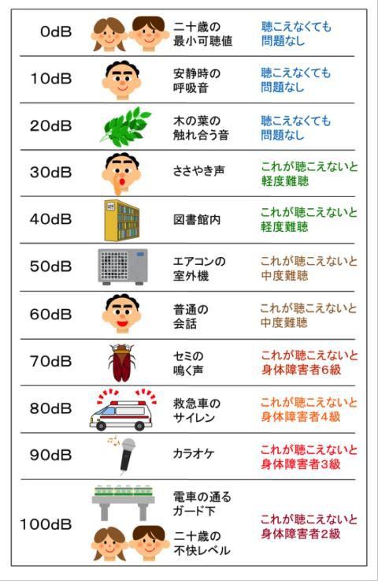

はじめに
皆さんは、「ブラジルの人、聞こえますかー！？」というネタをご存知でしょうか？
サバンナというお笑いコンビの八木(高橋じゃないほう)のギャグで、地面に向かって叫び、上記のセリフを言うというもので、数年前に流行って(？)いました。そして、そのギャグを見た時誰もが思ったであろうことの一つとして、「いったいどのくらいの声を出したらブラジルの人に声が届くのだろう」というのが有ると思います。なので今回は、実際にどのくらいの声を出せばいいのか、計算し導いていきたいと思います。
計算過程
実際にどのような計算をするかが、以下になります。
距離減衰を求める
まず、距離減衰について簡単な説明をすると、「音の大きさが遠くに伝わっていく間にどんどん小さくなること」、これが距離減衰です。また、減衰は音の発生源(音源)によって違うので、まずはその数値を出します。ここでは、ブラジルが地球上において日本のちょうど反対に位置するとし、地球の半径を \( (6371→)6400km \) とすると、\( 距離減衰量(A) = 20 × log_{10}(r ÷ r0) \)となります。
※\( r \) は距離、\( r0 \) は、音源からの基準となる距離なのでこの場合、\( r0=1 \) とすると\( A = 20 ×log_{10}((12800000 × 3.14 ÷ 2) ÷ 1) = 146.06 ... \) →\(約 146dB \) と求められ、これがこの場合の距離減衰となります。
出す必要があるdBの量を求める
前項で減衰量を求めたので、右の図より、日常的な会話 \( 60dB \) を聞こえさせるとすると、\(60+146=206dB\) となり、これがブラジルの人に声を届けるのに必要な声の大きさということです。ちなみに、どのくらいの大きさかを比べるのに飛行機付近の音と比べると、飛行機のエンジンから \( 30m \) 離れた場所での音の大きさが \( 120dB \) なので、差が約 \( 86dB \) であり、\( dB=20×log_{10}(音の倍率) \) なので \( 86(dB)=20×log_{10}(音の倍率) \) であるため、音の倍率は約 20100 倍となります。
つまり、八木氏は飛行機のエンジンから \( 30m \) 離れた場所で聞く音の2万倍もの音量の音を出そうとしていたわけです。
まとめ
ということで、実際に音の大きさを計算してみたわけですが、予想通りとても大きいことが分かりました。八木氏は、ネタの中で地球にぽっかりと穴をあけようとしていたようですね。
編集後記
今回は合同部誌ということで、計算は自分(清水)が、そして本文は柴生田が書くという形で進めました。最初、音のことについてほぼ何も知らず、計算方法を調べるところから始まったのですが、なかなか自分の要望にあったページが見つからず、かなり苦労しました。計算自体は意外と簡単だったのでよかったです(笑)。
今回、自分たちとしては初めての部誌だったので至らぬ点もあったかと思いますが、生あたたかい目で見てくださると幸いです m(_ _)m
最後まで読んでいただき、ありがとうございました。
参考文献
- 騒音の基礎知識 - WebArchive
- dB の話 音の大きさ
(リンク切れ) - 音の大きさ 「dB(デシベル)」
- 音速 - ウィキペディア
- 騒音予測計算の紹介
(リンク切れ)